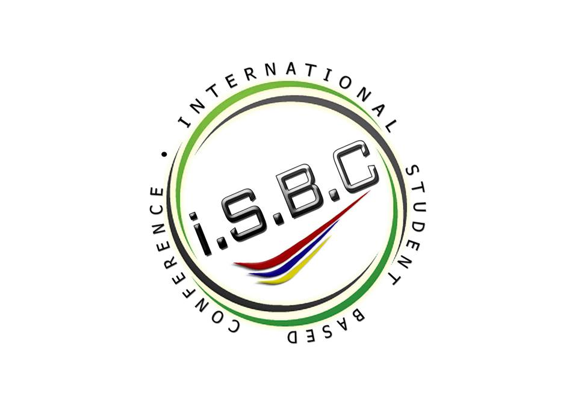

3 - 5 OCTOBER 2014
EASTIN HOTEL, PENANG
Catalyzing your ideas, giving you every opportunity
Everyone of us has an idea. What differentiates an idea from a revolution is action! ISBC is designed to solve this problem. Every year we invite leadng industries and national icons to this conference to interact with young innovators like you! They provide guidance and resources to all the participants attending this conference. This ensures that the participants, YOU, not only make a point, but also make an impact!
30 JUNE 2014
31 JULY 2014
3 - 5 OCTOBER 2014
History
ISBC was pioneered by Dr. William Wong in the year 2008. The aim was to cultivate the art of research from a very young age. Till now, ISBC has been running for 7 consecutive years and is one of the largest Gen-Y conference in the nation!
